以下为 Flutter 应用在界面测试中渲染的真实页面截图，非原概念稿。每种尺寸收录 14 个页面，可切换手机和平板布局，点击图片放大查看。
手机布局 · 14 个页面
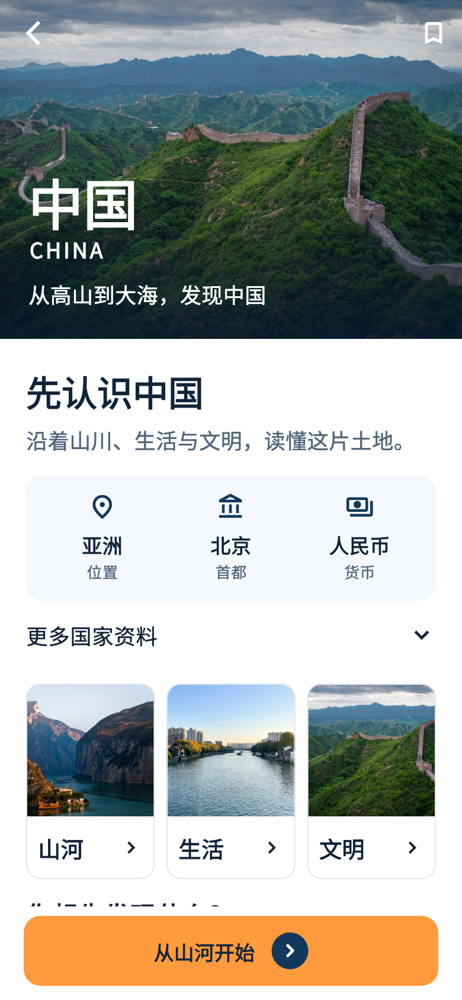
国家名片、探索主线与完整目录入口
/countries/china
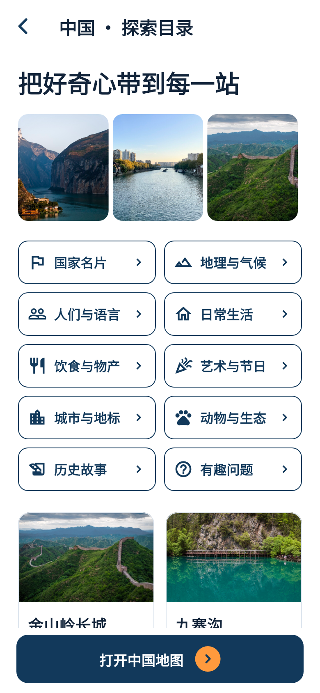
按栏目浏览中国内容
/countries/china/contents
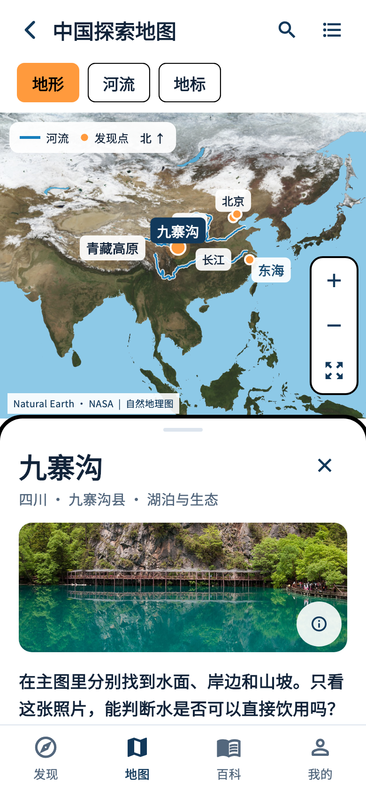
真实地理底图、河流与地点详情
/atlas?country=china&place=jiuzhaigou
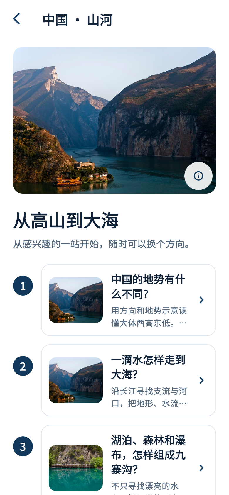
沿着地势、河流与自然景观阅读
/countries/china/journeys/mountains
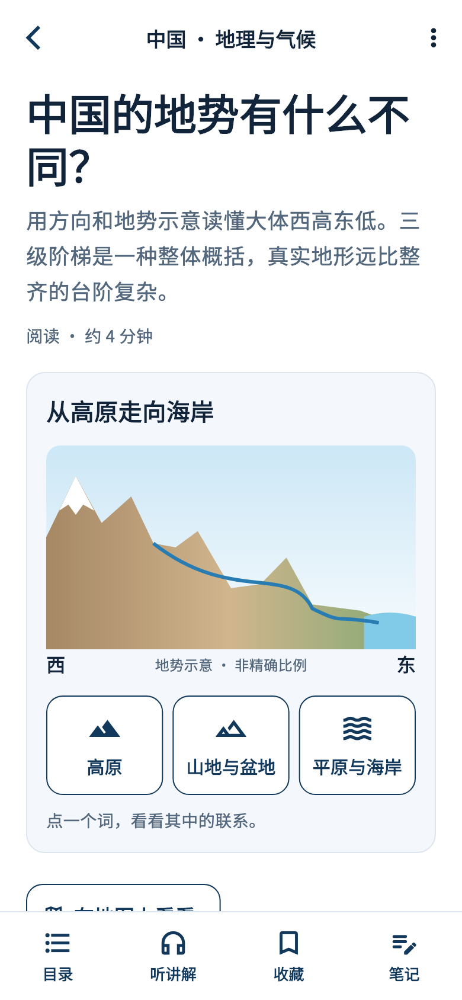
地势示意与分段阅读
/articles/china-geography
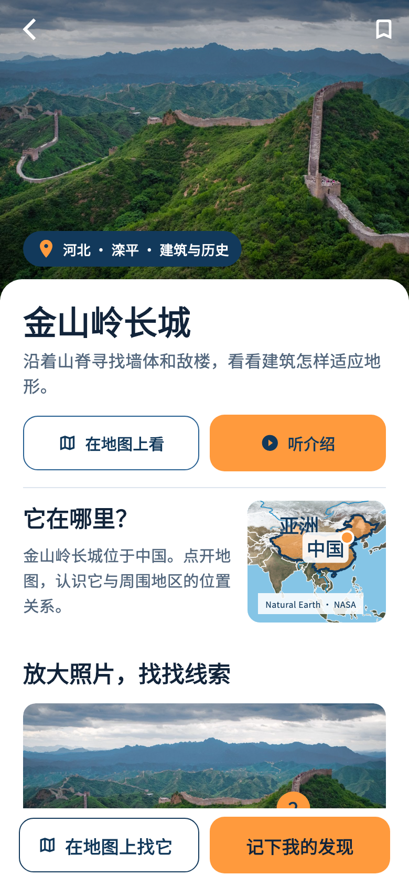
地点介绍、照片观察与地图入口
/places/great-wall
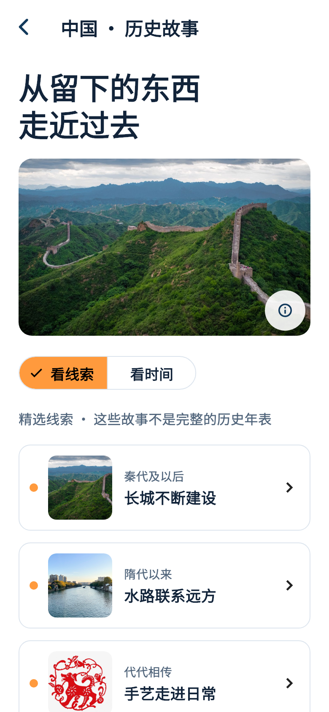
从留下的物件认识历史
/countries/china/timeline
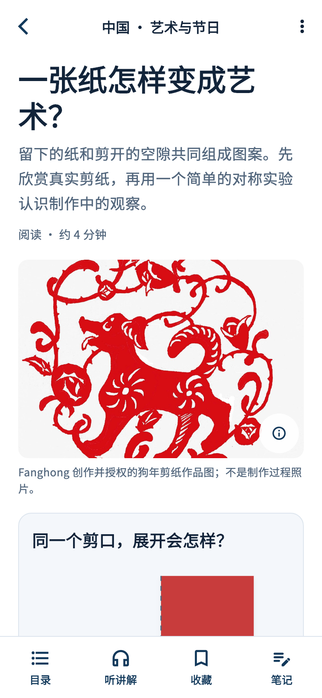
剪纸阅读与思考线索
/articles/china-culture
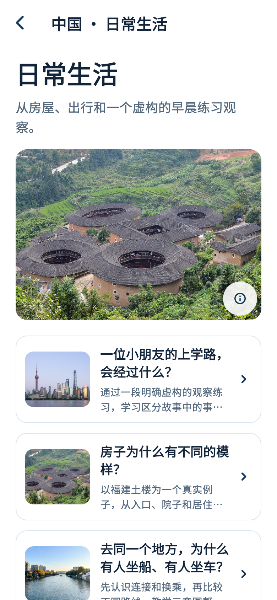
日常生活栏目与文章入口
/countries/china/sections/daily
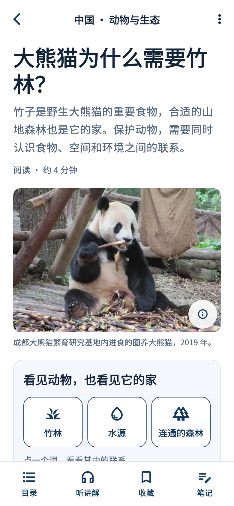
大熊猫与栖息地阅读
/articles/china-nature
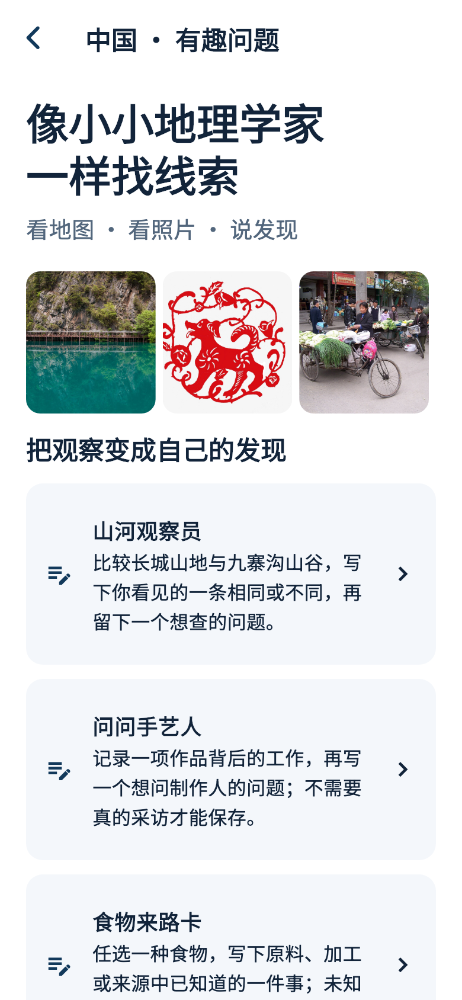
观察任务与理解题
/countries/china/explore
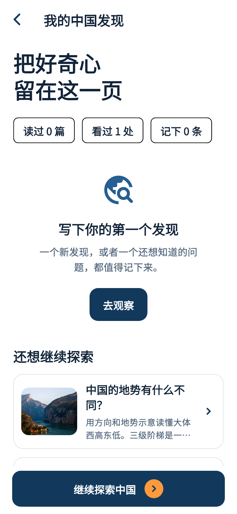
阅读足迹、笔记与真实空状态
/me/countries/china
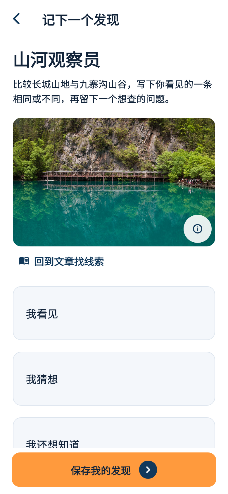
记录看见的线索、猜想与问题
/countries/china/observe/china-explore
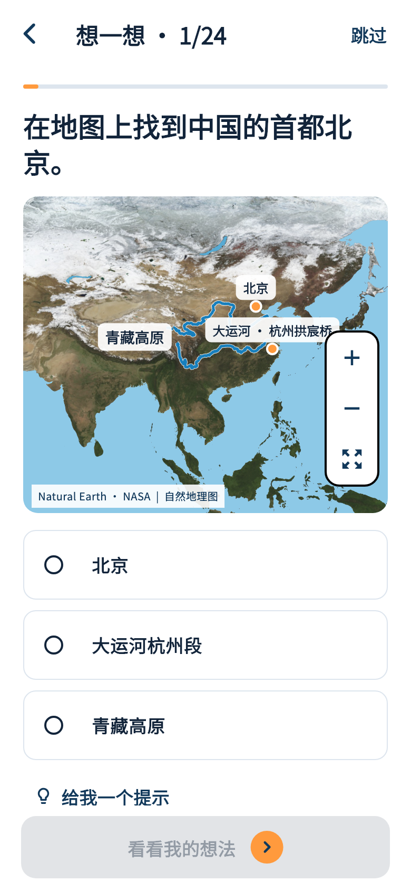
在地图或选项列表中选择答案
/exercises/china-location
当前展示手机截图。切换尺寸和放大查看需要启用 JavaScript；仍可通过各卡片的“单独打开截图”查看原图。